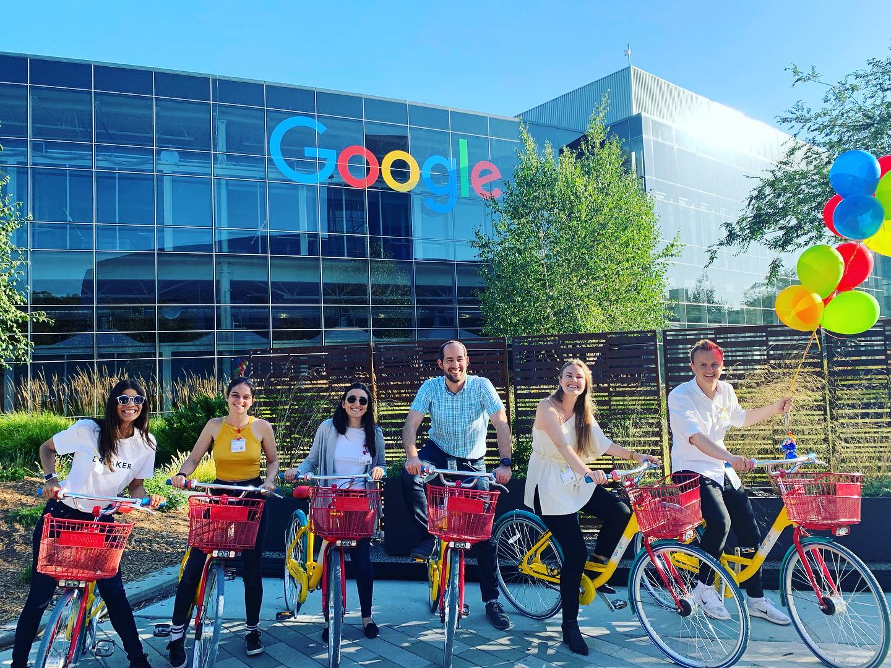
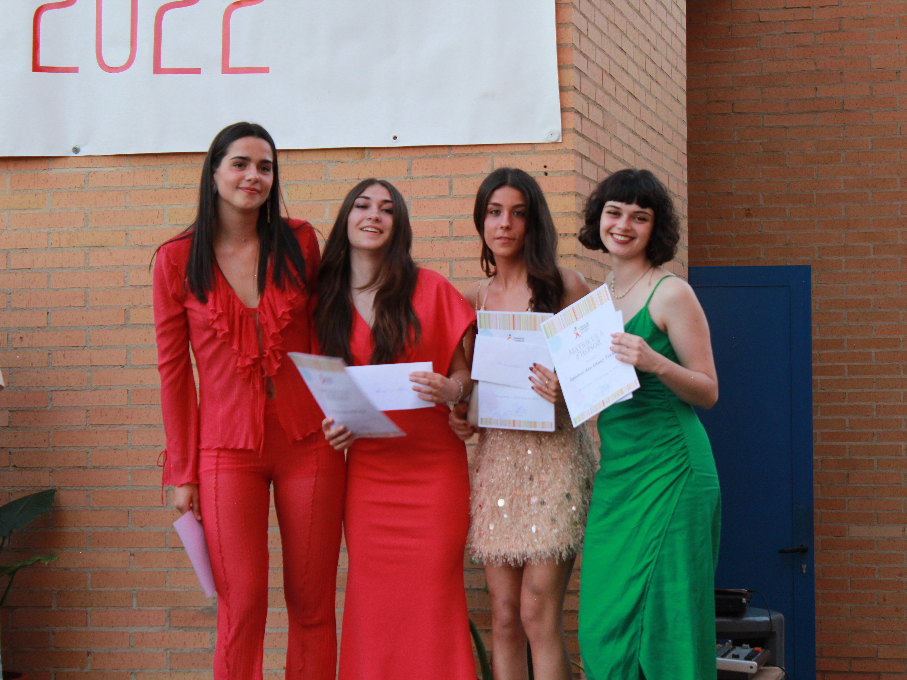
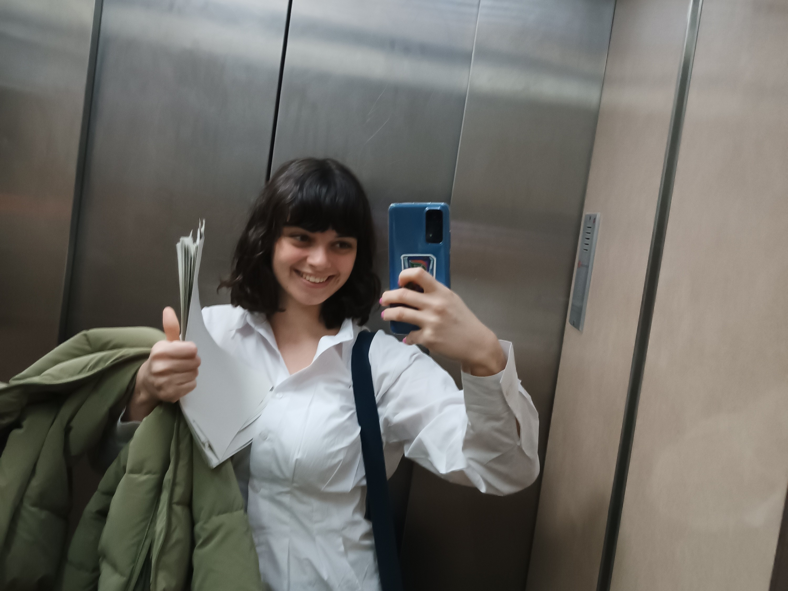

Ágatha del Olmo Tirado
Mientras descubres un poco sobre mí, te invito a escuchar la playlist que me acompaña mientras trabajo. ¡Espero que te guste! 🎶
El viaje que cambió mi vida - Junio 2019
Nací y crecí en un pequeño municipio de España, rodeada de mi familia y amigos, lo que me hacía sentir tan cómoda que nunca había sentido la necesidad de viajar fuera de España.
Sin embargo, en el verano de 2019 tuve la increible oportunidad de visitar a unos familiares en plena ciudad de San Francisco, EEUU.
Recorrí Silicon Valley, visitar las oficinas de Google, Facebook y Glass, la Universidad de Berkeley... Explorar tan de cerca un mundo tan ligado a la tecnología despertó en mí una nueva perspectiva sobre lo que era capaz de conseguir en un futuro: un impacto real.
"El cambio empieza en el final de tu zona de confort.”
- Roy T. Bennett
Mi primer contacto con la programación - Abril 2021
En primero de bachillerato elegí informática como asignatura. Aprendí los fundamentos de SQL y hardware, pero lo que realmente capturó mi interés fue la programación.
Para el proyecto final, debía crear un videojuego con Scratch. Justo en esa época contraje COVID y, durante mi aislamiento, pasé días enteros trabajando en él.
Fue el trabajo más emocionante que hice en el instituto. Me quedaba hasta las 4 a.m. perfeccionando cada detalle.
Si quieres probarlo, aquí tienes algunos consejos:
- Usa las flechas del teclado y la barra espaciadora para seleccionar.
- Presiona la tecla m para cambiar la música y haz clic izquierdo para pescar.
- Para entrar a una casa, selecciona el cartel que tiene al lado.
La importancia de un buen profesor - Mayo 2022
Curiosamente, durante todo el instituto estaba convencida de que iba a estudiar historia y ser profesora.
Pero el día de mi graduación, tras la entrega de Matrícula de Honor, mi profesor de economía Juan Carlos me habló sobre una nueva carrera en Valencia.
Me explicó que combinaba programación, economía y análisis de datos, y que tenía un enfoque técnico que podía complementar con cualquier otra disciplina.
Como siempre he confiado en la sabiduría de mis profesores, investigué más sobre la carrera... Esa carrera se llamaba Inteligencia y Analítica de Negocios (BIA).
Lo cierto es que cuando me matriculé en la carrera no entendía nada de lo que las asignaturas significaban, pero "minería de datos" sonaba divertido y eso, junto a mi intuición, fue suficiente para convencerme de apuntarme.
Un gran cambio - Septiembre 2022
Mi primer año en Valencia fue toda una aventura. Comencé la universidad en una ciudad nueva, compartiendo piso con personas que no conocía en absoluto.
Nueva clase, nuevos compañeros, nuevas asignaturas... Sin duda, fue un gran choque que me obligó a adaptarme y a crecer.
Antes solía extrañar la tranquilidad del pueblo, pero con el tiempo, supe valorar las múltiples actividades que Valencia ofrece: realicé cursos de inglés, valenciano y francés, participé en hackathones, me uní a clases de yoga...
He aprendido a valorar la suerte que tengo, pudiendo estudiar una carrera tan relevante, ser independiente y haber tenido la oportunidad de conocer a tantas personas diferentes.
Lo que Valencia me ha ofrecido - siempre
Valencia y la carrera me han ofrecido unas oportunidades súper interesantes desde el primer día hasta hoy. Estos son solo unos ejemplos:
En la primera imagen me encuentro en el evento de inauguración de Economia DataTech, que trata de mantener el contacto con el estudiantado egresado del Grado en BIA realizando eventos, charlas y networking.
En la segunda imagen salgo con mis compañeros en el DataViz Challenge: Valencia Smart Vision, donde teníamos la tarea de crear un dashboard con PowerBI sobre el turismo en Valencia.
En la última imagen se me ve con mi compañera María, con la que asistí al VDS, el evento tecnológico internacional organizado por Startup Valencia en la Ciudad de las Artes y las Ciencias donde conocí a profesionales increíbles.